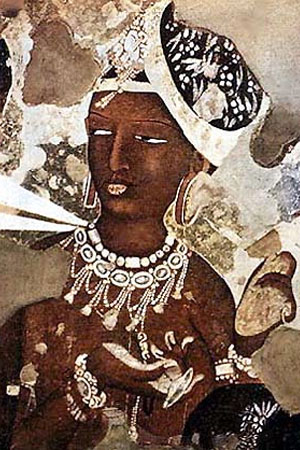

Апсари або апсарас (імовірно, це древнеиндийское слово означає "вийшла з води"), в ведійської і індуїстської міфології напівбожественними жіночі істоти, що живуть переважно в небі, але також і на землі - в річках, лісах, на горах. Як жіночих парфумів вод і дружин або коханих гандхарвов апсари згадуються в "Рігведі" і "Атхарваведе".
Згідно ведичним текстів, апсари, як і інші духи, здатні загрожувати людям, зокрема насилаючи на них любовне безумство, і в "Атхарваведе" наводяться заклинання проти них. У індуїстської міфології апсари, залишаючись дружинами гандхарвов, набувають функції небесних куртизанок і танцівниць. Їх походження описується в текстах по-різному. "Рамаяна" розповідає, що вони виникли при пахтанье океану богами і асурами, і так як ні ті, ні інші не побажали взяти їх в дружини, вони стали "належати всім". "Харівамша" і "Ваю-пурана" оповідають, що одинадцять найбільш шанованих апсар (Менака, Урваши, Прамлоча і інші) народилися з "уяви" Брахми, а решта були дочками Дакши. Число апсар в пуранах коливається від двох-трьох десятків до сотень тисяч, і вони класифікуються за кількома розрядами.
До вищого, "божественному" розряду дайвіка відносяться апсари, що знаходяться в безпосередньому службі в богів і нерідко по їх дорученням спокушають асуров або аскетів, чия подвижницька життя могла б зробити їх рівними богам. Так, Апсара Тілоттама спокусила братів Сунде та Упасунду, через неї вбили один одного; Апсара Гхрітачі - ріші Бхарадвадж, що став батьком Дронь; апсари Менака і Рамбха - мудреця Вишвамитри, і перша народила від нього дочку Шакунталу, а другу він в покарання перетворив на тисячу років в камінь. Апсари за своїм бажанням здатні як завгодно змінювати свій вигляд, але зазвичай вони зображаються прекрасними жінками, одягненими в багатий одяг, прикрашені коштовностями і квітами. За епічним уявленням, апсари хвалять в раю-Сварзі Індри смертних воїнів, які полягли героями на полі брані. На цій посаді вони соответветствуют скандинавським Валькірія.
На картині представлений фрагмент розпису V століття печерного монастиря Аджанта в штаті Махараштра Західної Індії з зображенням апсари. Декоративний живопис покриває стелі печер стародавнього монастиря: вона зображує небесні сфери, що представляють буддійський рай - повний цвітіння, з летять птахами і божественними апсар.